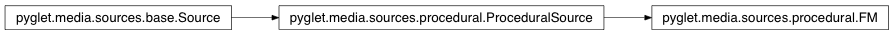

FM Class¶
-
class
FM(duration, carrier=440, modulator=440, mod_index=1, **kwargs)¶ A procedurally generated FM waveform.
This is a simplistic frequency modulated waveform, based on the concepts by John Chowning. Basic sine waves are used for both frequency carrier and modulator inputs, of which the frequencies can be provided. The modulation index, or amplitude, can also be adjusted.
Parameters: - duration (float) – The length, in seconds, of audio that you wish to generate.
- carrier (int) – The carrier frequency, in Hz.
- modulator (int) – The modulator frequency, in Hz.
- mod_index (int) – The modulation index.
- sample_rate (int) – Audio samples per second. (CD quality is 44100).
- sample_size (int) – The bit precision. Must be either 8 or 16.
Attributes:
audio_formatdurationThe length of the source, in seconds. envelopeinfovideo_format
Inherited members¶
Attributes
FM.audio_format= None
FM.durationThe length of the source, in seconds.
Not all source durations can be determined; in this case the value is None.
Read-only.
Type: float
FM.envelope
FM.info= None
FM.video_format= None